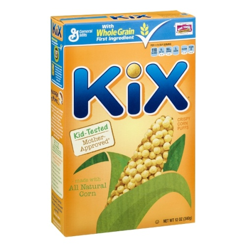
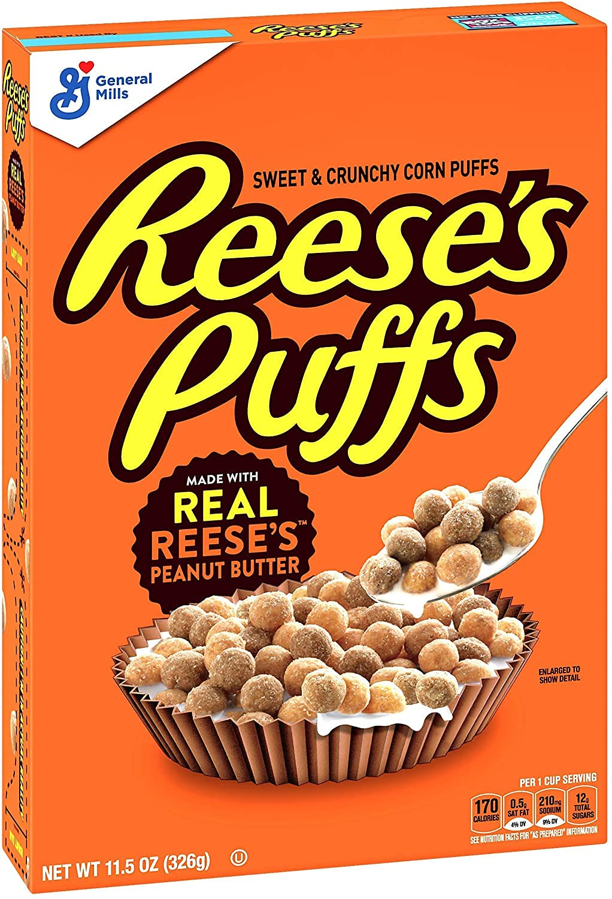

Spherical Cereal Examples
The first cereal, Kix, was invented in 1937 after the invention of the puffing gun. The new technology allowed General Mills to create a new shape of cereal to supplement their standard bland shaped cereals.
The second cereal, Trix, is a colored addition to the spherical cereal family added in 1954. Created as a colorful and sugary version of Kix cereal, the sweet artificial fruit flavors have been a success for decades.
The third cereal, Reese's Puffs, is a more recent addition, created in 1994. It was created as a candy flavored cereal, but unlike many which act as novelty flavors which rise and get discontinued in only a few months or years. Reese's Puffs have maintained popularity for almost 30 years.


